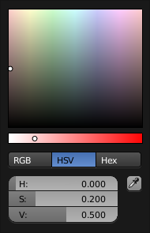

Color Picker¶
Circle HSV.
The color picker is a pop-up that lets you define a color value. Holding Ctrl while dragging snaps the hue to make it quick to select primary colors.
- Color field
- Lets you pick the first and second color component. The shape can be selected by the Types.
- Color slider
- The slider with a gradient in the background lets you define the third color component. It can also be controlled with the Wheel.
- Color space
Selects the Color Space for the number fields below.
RGB, HSV/HSL, Hex
- Color values
Blender uses (0 to 1.0) values to express colors for RGB and HSV colors.
Hexadecimal (Hex) values are expressed as
RRGGBB. Shorthand hex colors are also supported asRGB, e.g. dark-yellowFFCC00, can be written asFC0.For operations that are capable of using Alpha, another slider “A” is added.
- Eyedropper
- The Eyedropper (pipette icon) can be used to sample a color value from inside the Blender window.
Note
In Blender, the Hex and HSV/HSL values are automatically gamma corrected however, for the RGB values, they are in Scene Linear color space, and are therefore not gamma corrected. For more information, see the Color Management and Exposure page.
Types¶
The default color picker type can be selected in the Preferences, see: System.
- Circle
- The color values ranging from center to the borders. The center is a mix of the colors.
- Square
- The Borders of the square are the axis for the two color components, with the center on the bottom right.
Circle HSV. |

Circle HSL. |
|

Square (SV + H). |

Square (HS + V). |

Square (HV + S). |
Shortcuts¶
- Ctrl-LMB (drag) snaps to hue.
- Shift-LMB (drag) precision motion.
- Wheel adjust the brightness.
- Backspace reset the value.